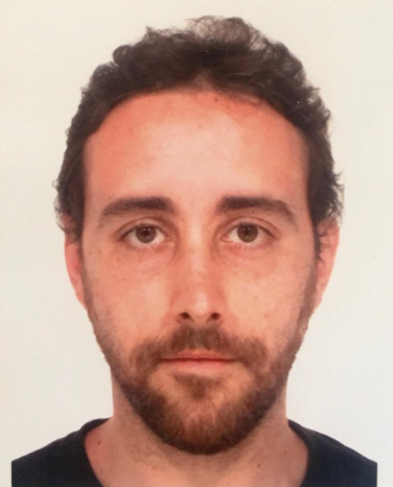

Dave WEB
Dave WEB
DAVIDE CONSIGLIERE
Chi sono

Ciao e benvenuto sul mio sito personale di prova ! Mi chiamo Davide Consigliere, ho 33 anni e ho deciso di intraprendere la carriera lavorativa da programmatore.
Ho provato a creare questa pagina personale come esercizio e compito a scuola.
Nel seguente blog descriverò un po' chi sono, le mie esperienze di formazione (scolastiche e lavorative), i miei viaggi e una breve gallery di bei momenti che ho vissuto.
Grazie per essere qui!
Esperienza scolastica
Mi sono iscritto nella scuola ITIS Primo Levi nell'anno scolastico 2003/2004, affrontando così un percorso di studio indirizzato all'elettronica e alle telecomunicazioni.
Non avevo ben chiaro cosa avrei voluto fare da grande, ma sapevo che era un percorso formativo che mi avrebbe aperto a molteplici possibilità, sia lavorative che di eventuali specializzazioni.
Nell'anno 2009 ho così ottenuto il diploma di "Perito Industriale Capo Tecnico ad indirizzo Elettronica e Telecomunicazioni", con un punteggio di 78/100.
Appena ho ottenuto questo importante obbiettivo ho voluto lanciarmi subito nel mondo del lavoro, desiderando di avere un'indipendenza economica...e così è stato.
Formazione lavorativa
Come spiegato precedentemente ho intrapreso un percorso lavorativo molto presto, volendo assolutamente un'indipendenza economica. Ho quindi iniziato a lavorare tramite cooperativa in una ditta, la Januaplast s.r.l., come addetto al facchinaggio nel settore della gomma/plastica. Il mio obbiettivo era quello di cercarmi un lavoro migliore di questo, ma ottenendo nel frattempo uno stipendio che mi potesse permettere di "togliermi delle soddisfazioni" e iniziare a maturare come persona. Dopo breve tempo, però, il datore di lavoro della suddetta ditta ha voluto assumermi come operatore di soffiaggio PET, avendo notato la mia determinazione e dedizione. Infatti in quel periodo era stata comprata una grande macchina nuova per il soffiaggio di flaconi in PET, decidendo così di assumermi nel ruolo dandomi la possibilità di imparare un mestiere e di crescere lavorativamente. Negli anni successivi la Januaplast s.r.l. venne poi acquisita da un'importantissima azienda multinazionale nel settore, con la quale ho avuto maggiore possibilità di fare carriera ottenendo il ruolo di Capo Turno. Grazie a questo ruolo ho avuto la possibilità di crescere ulteriormente, imparando anche a gestire il personale e i reparti. Nell'anno 2022, però, la multinazionale ha deciso di chiudere lo stabilimento, costringendomi così a trovare un nuovo lavoro nonostante la carriera intrapresa. Ho quindi trovato un impiego come attrezzista stampi nella azienda Georg Fisher TPA s.r.l., con un contratto di sei mesi. Durante i miei ultimi 2 mesi di lavoro all'interno di questa azienda eravamo in cassa integrazione, costringendo quest'ultima a non rinnovarmi il contratto, nonostante il disappunto dei miei collegi e del mio capo reparto. A questo punto della mia vita ho voluto dare una svolta importante, dandomi l'obbiettivo di non fare mai più l'operaio e di intraprendere una carriera che mi potesse realizzare maggiormente come persona e farmi sentire più orgoglioso. Ho così scoperto il mondo della programmazione, iniziando a studiare da autodidatta e poi iscrivendomi in una scuola di formazione passando le selezioni. Vedremo cosa mi aspetterà in futuro!...
Capacità e competenze generali
Ho acquisito un'ottima capacità relazionale, anche con colleghi di nazionalità estera. Ho imparato grazie alla mia esperienza da capo turno a saper come gestire le persone in base al loro carattere e alla loro personalità, in modo da renderle sempre il più collaborative possibili. Ho esperienza nel gestire il turno selezionando i ruoli e i cambi per le pause, anche nell'organizzazione dei reparti mantenendoli sempre in ordine e tenendoli sempre ben forniti di tutto il necessario per le varie produzioni. Sono molto pignolo con l'ordine e la pulizia, se vedo che nel luogo di lavoro queste ultime vengono a mancare mi metto subito all'opera per porvi rimedio. Ho un'ottima manualità a livello meccanico acquisita durante le mie esperienze lavorative, come il montaggio e lo smontaggio dei macchinari e degli stampi. Ho anche esperienza nell'utilizzo del carroponte per lo spostamento di stampi con pesi di tonnellate, quindi con particolare attenzione alla sicurezza, alla gestione dei baricentri e dei punti di presa. Ho anche una discreta manualità di utilizzo del computer, e sono portato ad imparare l'utilizzo di vari programmi. Ho anche esperienza nel settore del magazzino, utilizzando il muletto per lo scarico e il carico dei camion. Sono una persona volenterosa e con tanta voglia di imparare, fare esperienze nuove e se possibile fare carriera. Mi piacerebbe anche, se ce ne fosse la possibilità, di viaggiare per lavoro.